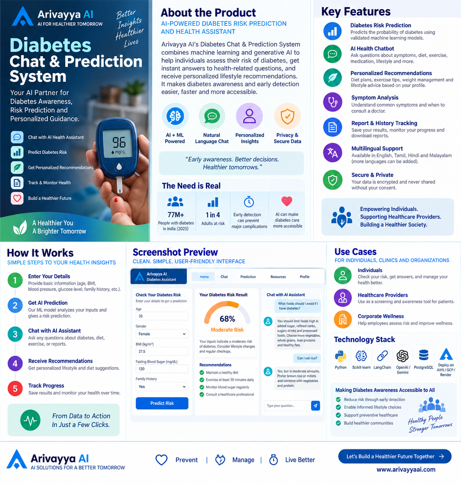
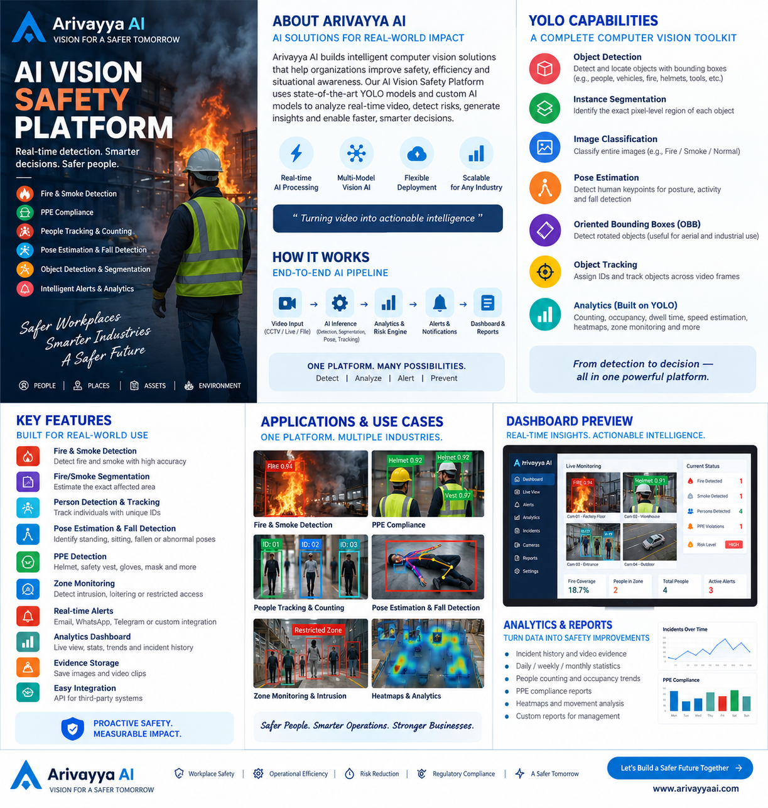
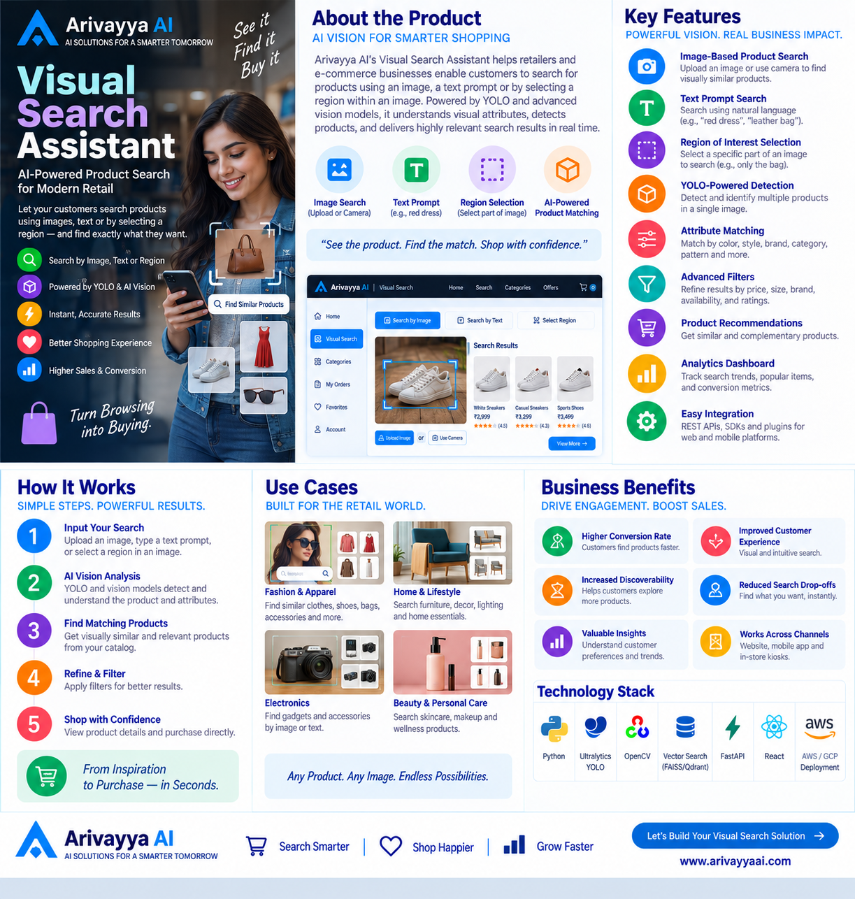

💬
Gym AI Enquiry Assistant
Answers member questions day and night, captures qualified leads, supports trial bookings and gives owners a clear follow-up dashboard.
Explore Gym AI outcomes →From local customer enquiries to clinical imaging and workplace safety, every product is designed around a clear user, a useful decision and a measurable outcome.
Answers member questions day and night, captures qualified leads, supports trial bookings and gives owners a clear follow-up dashboard.
Explore Gym AI outcomes →Turns a local service business into an easy digital experience with service discovery, booking prompts, location details and conversion-focused content.
View Yamaha service demo →An Arivayya AI publishing work that demonstrates how intelligent assistance can simplify content creation and digital publishing workflows.
Open Arivayya AI Publish AI →Compares a resume with a job description, reveals matching strengths and missing requirements, and helps candidates prepare a more focused application.
See outcomes and live demo ↓Guides users through an adaptive health conversation, identifies diabetes risk indicators and provides clear, responsible next-step guidance.
Explore the Diabetes Care Assistant →Assists specialists with view classification, cardiac structure analysis, measurements, quality checks and doctor-reviewed reporting.
View pediatric echo features →Provides caregivers with accessible, approved health education and helps clinics answer routine questions while escalating concerns appropriately.
Request a guided demo →Detects fire, smoke, missing protective equipment, restricted-zone entry, falls and crowd conditions from camera feeds.
See product details ↓Lets shoppers find similar products using an image, a text prompt or a selected region—making discovery faster and more intuitive.
See product details ↓Extracts, validates and organises information from invoices, forms, claims, receipts, resumes and contracts to reduce manual entry.
Discuss a document workflow →Profiles, cleans and structures raw operational data into analytics-ready datasets for reporting, governance and machine learning.
Request product walkthrough →Role-based AI productivity learning with ready-to-use prompts, live demonstrations, structured-output patterns, safety guidance and token-cost optimization.
Explore PromptCraft Pro →Helps farmers and agriculture teams understand coconut disease symptoms, review possible conditions and access structured prevention and crop-care guidance.
View coconut project →Upload a resume and compare it with a target job description. The result helps users see where they fit, what may be missing and what to improve before a human makes the final decision.

The Diabetes Chat & Risk Advisor combines a simple risk check with accessible education and personalised lifestyle suggestions.
For awareness and screening support only. It does not diagnose diabetes or replace advice from a qualified medical professional.

The Vision Safety Platform helps teams monitor critical safety conditions across factories, warehouses, campuses and public spaces.

Visual Search makes product discovery natural: upload a photo, describe an item or select part of an image to find relevant matches.
Start with an existing solution or commission a focused product built for your users, data and operating environment.